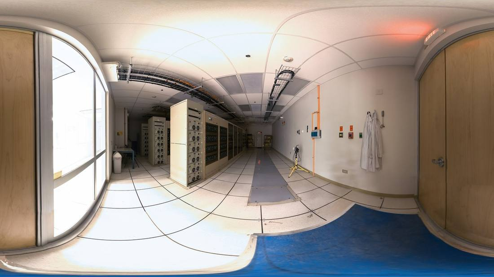

OpenAI Opens 50,000 Free ChatGPT Grants for Academic Researchers
OpenAI opened applications on November 23, 2026, for 50,000 new ChatGPT for Academic Researchers grants, awarded first-come, first-served to eligible research faculty and postdoctoral researchers. Each grant gives the recipient and up to two collaborators complimentary ChatGPT Plus for up to 12 months, toward a program goal of 200,000 researchers worldwide, double the July pilot goal. The pilot reached 20,000 researchers in 33 countries and handed out Pro; the new round switches to Plus to fund the wider reach.

- 01THE OPENING — November 23, 2026: applications open for the next round of ChatGPT for Academic Researchers. OpenAI's Help Center confirms applications are open on November 23, 2026, with 50,000 new grants awarded first-come, first-served to eligible applicants.
- 02THE TERMS — Each grant covers the approved researcher and up to two collaborators with complimentary ChatGPT Plus for up to 12 months. Eligibility requires research faculty or postdoctoral status at an eligible academic institution in a supported country, research published in the past three years, and an eligible field among seven sciences. By default, OpenAI does not use program data to train its models.
- 03THE SCALE — The program began as a July 2026 pilot that reached 20,000 researchers in 33 countries. The November 16 expansion doubles the overall goal to 200,000 researchers; this round can support up to 150,000 through its three-seat grants. OpenAI also published its "Science at the Frontier" study of more than 1,800 pilot researchers and contributed $5 million to a Simons Foundation initiative on AI-produced mathematics.
WHAT HAPPENEDWhat Happened
OpenAI opened applications on November 23, 2026, for the next round of ChatGPT for Academic Researchers, its program giving academic researchers free access to ChatGPT. The round offers 50,000 new grants on a first-come, first-served basis, each covering the approved researcher and up to two collaborators with complimentary ChatGPT Plus for up to 12 months. OpenAI's Help Center confirms applications are open on November 23, 2026, and researchers already on the waitlist who qualify were to receive activation instructions by email before the opening.
The program began as a pilot in July 2026 that reached 20,000 researchers in 33 countries. The November 16 expansion doubles the program's overall goal to 200,000 researchers worldwide. The pilot handed out ChatGPT Pro; the new round switches to Plus after OpenAI reviewed pilot usage and found most participants would have stayed within Plus limits, a trade that funds the wider reach. With three seats per grant, this round can support up to 150,000 researchers.
Eligibility is limited to research faculty members and postdoctoral researchers at eligible academic institutions in supported countries, who have published research in the past three years in an eligible field and plan to use ChatGPT for academic research. The seven eligible fields are Biological Sciences, Chemistry and Materials, Computer Science, Earth and Planetary Sciences, Engineering, Mathematics, and Physics. By default, OpenAI does not use data shared through the program to train its models. Alongside the expansion, OpenAI published "Science at the Frontier: How Scientists Use ChatGPT," a study of more than 1,800 pilot researchers, and contributed $5 million to a new Simons Foundation initiative to help mathematicians examine results produced by AI.
WHY IT MATTERSAccess, not a model, is the product here.
Fifty thousand grants times three seats is the largest free distribution of frontier-model access OpenAI has offered to academia, and the first-come rule makes readiness the deciding factor rather than a lottery draw. For research teams outside well-funded institutions, a year of Plus access is a real budget line removed.
The meaningful number is not 50,000 but the Plus-for-Pro swap behind it. OpenAI is explicit that the downgrade is what pays for the wider reach. The program's value therefore depends on whether Plus usage limits actually fit research workloads, which is exactly the question the pilot data was meant to answer.
WHAT CHANGEDFrom lottery to first-come, from Pro to Plus.
The pilot selected researchers by lottery and gave them Pro, OpenAI's top consumer tier. The new round drops the lottery: the first 50,000 applications that meet the eligibility requirements get in, and each grant is three Plus seats for up to 12 months.
The waitlist is not abolished, it is sequenced first. OpenAI said qualifying researchers already on the waitlist would be emailed activation instructions before applications opened to everyone else, so the earliest grants likely go to people who were already waiting.
WHAT IS NEXTWatch how fast the window fills, and what comes after it.
OpenAI has published no closing date for the round, only that grants go to the first 50,000 eligible applications. If the window fills in days, that is itself a signal about unmet demand for sanctioned academic access, and it sets up the question of whether a further round follows.
The broader program still aims at 200,000 researchers, so this round is a step rather than the destination. Watch for OpenAI's report on uptake, for any extension of the round, and for whether the "Science at the Frontier" findings shape the training and support offered to grantees.
THE SHIFTWhat Changed
SIGNAL JUDGMENT — ANALYSISA Real Access Expansion, Priced In Plus Seats.
Tokenta Signal's judgment: the opening is real and the terms are clear, but the substance is a trade, not a gift without cost. OpenAI is widening the door by narrowing the tier, and the bet is that Plus limits fit research work. The survey claim that pilot work would have taken nearly twice as long without ChatGPT is self-reported, not measured, and should be read as enthusiasm rather than evidence. The test that matters now is how fast 50,000 grants go, and whether the researchers who get them find Plus enough.
WHAT REMAINS UNCERTAINWhat Remains Uncertain
EVIDENCEEvidence
OpenAI opened applications on November 23, 2026, for 50,000 new ChatGPT for Academic Researchers grants, awarded first-come, first-served. Each grant gives the approved researcher and up to two collaborators complimentary ChatGPT Plus for up to 12 months, toward a program goal of 200,000 researchers worldwide.
PRIMARY SOURCESPrimary Sources
- OpenAI: Broadening access to AI for scientists
https://openai.com/index/expanding-chatgpt-for-academic-researchers/ - OpenAI Help Center: ChatGPT for Academic Researchers
https://help.openai.com/en/articles/20001406-chatgpt-for-academic-researchers - Neowin: OpenAI doubles free ChatGPT access to 200,000 scientists, but there's a catch
https://www.neowin.net/news/openai-doubles-free-chatgpt-access-to-200000-scientists-but-theres-a-catch/ - CASRAI: OpenAI expands free access to 200,000 researchers
https://casrai.org/news/openai-academic-researchers-200000-free-access-2026